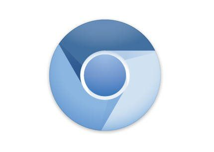

Navegadores web
Mozilla Firefox es un navegador web desarrollado por la compañia Corporación Mozilla. Creado en el año 2002 por David Hyatt y Joe Hewitt, se trata de un navegador multiplataforma( teléfonos móviles, ordenadores, tablets y otros dispositivos) y disponible para Windows, Linux, Android, iOS y macOS. Desde su lanzamiento, este navegador ha ido adquieriendo popularidad hasta convertirse en el segundo navegador web más utilizado del mundo con más de 500 millones de usuarios. Una de sus características más destacadas es la utilización del motor de renderizado libre Gecko, escrito en C++ y que implementa estándares web. Este motor, al ser de software libre, permite que cualquiera pueda modificarlo a su gusto, siendo muy popular entre desarrolladores.
Chromium
Chromium es un navegador web de código abierto. En origen, Google pretendía obtener su código fuente desarrollándolo como un proyecto paralelo a Google Chrome, el navegador web de la compañía. El resultado final, después de que otras desarrolladoras de software publicaran versiones propias con el nombre de Chromium, es el de un navegador web que comparte las características comunes que requieren todos ellos. Dentro del código de Chromium, solamente la base del mismo supone 35 millones de líneas de código fuente. Google ha marcado, como característica principal de Chromium, que sea un administrador de ventanas y pestañas que funcione de la manera más ligera posible. A partir de aquí, de esta característica imprescindible, ha dotado al proyecto de algunas características que lo complementan. Se trata de especificaciones que hacen que sea un código completo. Por ejemplo, Chromium incorpora GoogleUpdate o la aplicación correspondiente para que sea compatible con sistema de actualizaciones del sistema operativo en el que se ejecute. Aunque ya en desuso, incorporaba Adobe Flash Player integrado. También incluye un lector de archivos en formato PDF y códecs multimedia para formatos H.264, AAC, Vorbis, Theora, WebM y MP3. Pensando en Chrome, Google también agrega la opción de rastrear las descargas y actualizaciones de Chromium cuando se trata de promociones o acuerdos comerciales con marcas distribuidoras para recoger información de ubicaciones y fechas en las que se instala Chromium. Otra característica común es la filtración de extensiones en la tienda online de Google para aquellas que no están alojadas en la Chrome Web Store.